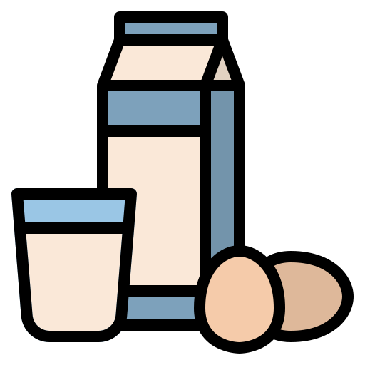
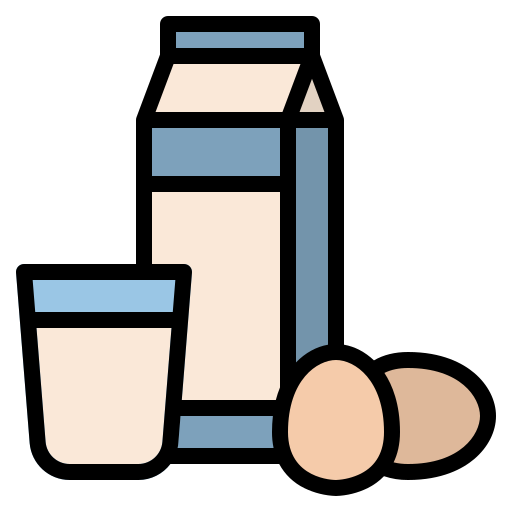
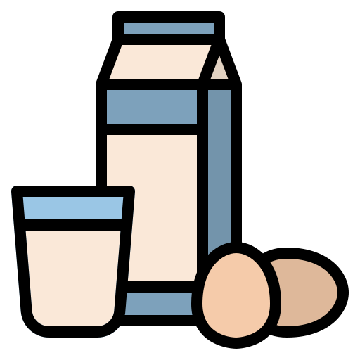

誰說外食不健康？均衡營養其實可以這樣！
109網頁設計與敘事 第七組
製 作 ｜
新聞所 張碩芬
新聞所 陳 寧
心理系 林昱安
指導老師｜謝吉隆 老師
 

誰說外食不健康！
均衡營養就這樣
隨著國人健康觀念提升，近年台灣健身人口持續增長，同時帶來不同領域的新商機。健身族瘋健身，帶動健身餐大大盛行，因為飲食習慣的改變，又現代人長時間在外奔波會選擇外食，為顧及飲食均衡，他們會在五花八門的餐廳中選擇最符合自己期待的健康飲食，如增肌與減脂的人，在蛋白質與澱粉選擇中有不同考量。店家紛紛推出健身餐，卡路里、營養含量都幫消費者算好，尤其雞胸肉被認為有助於減肥及體態維持，超商、餐飲業者看準國人追求健康，推出相關產品一同搶攻健身財。
在本專題中，我們聚焦於健身飲食，講述時下青年為了身體健康會如何選擇餐飲，以及納入考量的因素為何，以了解他們對健康飲食的想法與期待。
楊同學
我平常就有健身的習慣，因此每當重訓完或覺得想要均衡飲食時，會選擇吃健身餐，比較多是吃自助餐便當。
也吃過幾次配好的低GI便當，不過覺得那種有點貴。
而自助餐好處是是便宜而且多樣可以吃飽，依照當天口味挑選菜色，不過希望菜有味道但不要太油膩。主菜會選有調味的牛雞跟魚肉等高蛋白多一點，碳水化合物跟蔬菜少一點但要基本足夠補充，最好能配一杯豆漿飲品還有水果。
林同學
考慮到健康，最近想減脂並維持體態，因此定期到健身房報到。
想短期減脂時就會吃健身餐，我常吃自助餐因為可以自己選主菜而且也比較便宜，雖然不算嚴格的健康餐但能達到我的需求，不過我覺得自助餐很多配菜都還是高油要挑比較久。
飲食選擇以高蛋白、低碳水、低脂肪、多蔬菜為主並且要好吃。理想上高蛋白主菜要多變，但不能全只吃雞胸肉。
賴同學
我是舞蹈系學生，平常就注重飲食要少油少鹽，但同時也要均衡。
減肥的時候會選吃健身餐，考量的包括熱量、價錢與吃飯時間，像我晚上六點後就不會再進食，通常會選擇肉、水煮菜跟蛋吃。
理想的健康餐要含水煮肉、雞胸肉、玉米筍、番茄、蛋、青菜等。為了方便，我常選7-11或到有燙青菜的小吃店吃。
沈同學
我平常沒有控制飲食習慣，但在減肥、減脂的時候才會選吃健康餐。
我認為健康餐要包含五大類飲食，尤其蛋白質、蔬菜要多，澱粉要少一點，肉就不能太肥，而且希望盡量是白肉，不要紅肉。
減脂的時候我就只吃肉跟蔬菜，不吃澱粉，會考量價錢及份量，不能太少吃不飽，像自助餐就不錯因為可以選喜歡吃的而且便宜，有時也會回家吃。
陳同學
沒特別控制飲食，但我常會自己做沙拉或外面買餐盒、Subway三明治沙拉。
我認為健身餐裡面的菜要水煮、少調味、少澱粉，還要高蛋白，像是最近出現夏威夷生魚飯餐廳，就可以挑選自己想要的食材，包含蘋果、番茄、小黃瓜、蛋等，雖然鮭魚有點少，在選擇健身餐時第一考量是價格。
李同學
沒特別控制飲食，但不會排斥吃健康餐，偶爾路過時也會吃健康餐盒。
像政大附近有家Mr. Light就很推薦。我選擇健康餐時第一考量是均衡度，再來是價格、新鮮度及選擇多樣性。
我認為健康餐要包含五穀飯與雞胸肉才能均衡飲食。
營業時間：
11:30–14:00
17:30–20:00
電話：02-2936-8011
Google評價：4.7★
受訪者回饋：
政大畢業學長開了這家店，學長本身有在健身，因此他對減醣、飲食調配都有一套自己的研究，餐點價格100元左右，很適合學生、小資族！
營業時間：
11:45–13:30
17:30–19:30〔六日休息〕。
電話：02-2700-3388
Google評價：4.4★
受訪者回饋：
將得舒飲食(DASH Diet)觀念融入台式便當，根據一般上班男女的熱量需求，提升蔬果比例，也在米飯中加入穀物，盡量以豆製品及白肉或低脂紅肉作為蛋白質來源，改變「健康=難吃」的刻板印象。
營業時間：
11:00–20:00〔六日休息〕。
電話：0978-705-252
Google評價：4.5★
受訪者回饋：
飯粒粒分明，雞胸肉或里肌肉不會柴，更重要的是少油、少鹽，份量剛好，價格110-130元之間平價實惠，內用室內環境明亮舒適，外帶包裝完善之外，出餐迅速，是台北市難得的美味健康餐盒。
營業時間：
11:30–21:00〔每日營業〕。
電話：02-2367-6228
Google評價：4.7★
受訪者回饋：
沙拉飯、健康餐盒、火鍋，三種餐點可自由選擇。沙拉飯按主食差異有不同價格，先選主食→自選5種配料→選主菜→再選調味。健康餐盒菜色每日不同，但皆100元，肉量相對沙拉飯多一些。而火鍋有9種口味可選，亦可作素食，適合喜歡自由配、口味接受較廣的客群。
營業時間：
08:00–22:00〔每日營業〕。
電話：02-2772-5755
Google評價：4.4★
受訪者回饋：
Gonna共樂遊主打原型食物，餐點種類多元，包含沙拉、帕里尼、漢堡、義大利麵、甜點飲品等。其中「蔬肥雞肉碗沙拉」的低溫烹調雞肉加上綜合藜麥，非常好吃。另有餐點加入枸杞、豆腐等亞洲元素，吃起來不但不違和，還創造全新層次感。
營業時間：
08:30–17:00〔周一至五〕
09:00–17:00〔六日〕。
電話：02-2755-7758
Google評價：4.2★
受訪者回饋：
營養師Debra創立，所有餐點皆由Debra親自設計，並堅持手工製作。其料理雖然偏西式，但考量台灣人口味，除了沙拉還是有米飯可選。優格碗、酪梨三明治等餐則口味清爽+分量足夠。適合早午餐或下午茶時段，想吃高纖、低碳水、低熱量，拍美食照的人。
營業時間：
10:30–20:00〔周二至日，周一休息〕。
電話：02-2368-0878
Google評價：4.8★
受訪者回饋：
食材新鮮，配菜選擇多 給菜大方，還有十穀飯可供選擇，價錢公道，是少數自助餐中不會重油重鹹的那種，吃起來健康無負擔。
營業時間：
7：30~19：30〔周一至五〕。
電話：02-2371-6133
Google評價：2.9★
受訪者回饋：
別看google評論只有2.9星，其肉類選擇多元，青菜的選擇雖少但品質不錯，且便當價格約65、70元，台北街頭少見如此高CP值的自助餐。內用點餐時事先講可免費加飯，每日例湯和清淡的冬瓜茶可免費暢飲。外帶族仍居多數。
營業時間：
08:00–22:00。
電話：02-3365-3359
適合族群：
SUBWAY點餐取餐快速，適合外食族。在麵包、醬料、肉類自由搭配下也能做到「熱量低營養高」。如：麵包選擇上，以義式白麵包、全麥麵包為主，甚至不選麵包當成沙拉吃。不加醬料、只選橄欖油，也能減少熱量，因此也是控制體重、飲食健康族群常光顧的店之一。
24小時營業。
電話：02-2739-5493
適合族群：
7-11門市眾多，考量健身族與外食族的需求，也有提供減脂餐的選擇，如熱量353-373大卡的烤雞蔬食便當，又如與異業合作推出健康餐盒：和王品合作推女性喜愛的Su／food健康餐盒，冷藏區亦有低溫烹調雞胸肉、其他如地瓜、香蕉等能提供飽足感的複合型碳水，7-11也買得到，適合不想候餐的外食族或學生族。
